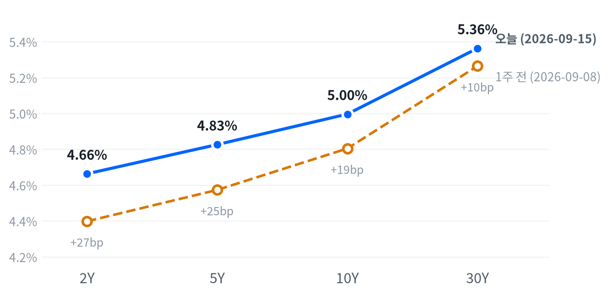

US MARKET BRIEF
유가 급등·금리 신고점에 지수 이틀째 하락, FOMC 하루 앞두고 스탠스 유지
미국 2026년 9월 15일 거래일 · 한국 9월 16일 발행. 가격은 일간 종가, 장중 경로는 30분봉 기준.
이날 3대 지수는 이틀째 하락했다. 유가는 중동 공급 우려에 하루 만에 3.98% 뛰어 105.43달러로 마감했고, 국채 10년물도 종가 기준 사이클 최고치까지 올라섰다.
내일 FOMC를 하루 앞둔 채권시장은 이미 팽팽하게 당겨져 있다. 멀티에셋 전략은 오늘 걸어 둔 트리거 어느 것도 충족되지 않아 채권 숏 바이어스를 포함한 일곱 자산군 등급을 모두 그대로 지킨다.
전략 코멘트
유가가 중동 공급 우려에 하루 만에 3.98% 뛰어 105달러를 넘었고, 국채 10년물도 4.996%로 마감해 내일 FOMC를 하루 앞두고 두 시장이 동시에 팽팽해졌다.
유가 급등은 기대인플레이션 경로로, 국채 금리는 실질금리 경로로 서로 다른 문을 거쳐 결국 같은 곳 — 위험자산의 할인율 — 을 누르고 있다는 뜻이다. 오늘 시장 전체를 관통한 공통 움직임에 함께 붙은 자산군도 금리에서 원자재로 바뀌었다.
오늘의 결정은 유지이며 시계는 다음 세션, 즉 내일 FOMC까지다. 일곱 자산군 모두 어제 걸어 둔 트리거가 하나도 충족되지 않아 채권 숏 바이어스, 에너지·귀금속 소폭확대를 포함한 전 등급을 그대로 지킨다.
이 유지 판단 가운데 채권 숏 바이어스는 내일 FOMC에서 인하 경로가 앞당겨지는 신호가 나오거나 30년물이 5.05% 밑으로 되돌리면 재검토 대상이 된다.
오늘의 장
아시아는 지난 세션(9/14) 종가 기준 닛케이(-0.81%)·상해종합(-0.07%)이 내리고 항셍(+0.45%)만 올라 지역 안에서도 갈렸다(평균 -0.14%). 유럽도 같은 날 DAX(-0.50%)·유로스톡스50(-1.02%)이 내리고 FTSE100(+0.44%)만 올라 지역 안에서도 갈렸다(평균 -0.36%). 두 지역 모두 이날 미국 지수의 하락과 같은 방향으로 움직였다.
| 지수 | 종가 | 등락 | 기준일 |
|---|---|---|---|
| 닛케이 | 63,492.99 | -0.81% | 2026-09-14 |
| 항셍 | 24,917.60 | +0.45% | 2026-09-14 |
| 상해종합 | 3,885.33 | -0.07% | 2026-09-14 |
| DAX | 25,440.81 | -0.50% | 2026-09-14 |
| FTSE100 | 10,697.60 | +0.44% | 2026-09-14 |
| 유로스톡스50 | 6,260.38 | -1.02% | 2026-09-14 |
| VIX | 17.20 | +0.59% | 2026-09-15 |
간밤 선물은 S&P·나스닥 모두 밤 9시(21:00 ET)께 고점(S&P 선물 7,701·나스닥 선물 29,495)을 찍었다. 이후 새벽 4시(04:00 ET) 저점(S&P 선물 7,645·나스닥 선물 29,231)까지 밀렸다. 현물은 보합 출발했고 갭은 나스닥 -0.14%로 가장 컸으며 S&P500 -0.10%, 러셀2000 -0.06%였다.
마감 위치로 보면 나스닥(16)은 하루 등락 범위의 저점권에서 끝났고, S&P500(29)·러셀2000(28)은 중단권에서 마감했다.
마감 위치는 당일 고저 대비 종가의 위치. 최근 2,253거래일 이력에서 고점권 경계는 84.6, 저점권 경계는 25.1이다.
이 하루를 움직인 것은 두 갈래였다. 사우디 남부 카미스 무샤이트 공군기지를 향한 예멘 후티 반군의 미사일·드론 공격과 호르무즈 해협 통항 선박 급감 소식(호주 ABC 보도)이 WTI를 장중 내내 밀어올렸고, 같은 시간 국채시장은 내일 FOMC를 앞두고 장중 한때 10년물이 5%를 넘어서며(야후 파이낸스 보도, 2007년 이후 최고) 지수를 짓눌렀다. AI 인프라 5종목 중 넷(마벨·코히런트·루멘텀·GE 버노바)이 반등했고 버티브만 홀로 밀렸는데, 개별 원인은 확인되지 않았다.
주식
S&P500은 7,586으로 마감해 최근 2년(504거래일) 가운데 이보다 높았던 날이 32일뿐인 매우 높은 자리를 지켰다. 나스닥(25,982)은 높은 쪽 12% 안, 러셀2000(2,870)은 높은 쪽 15% 안에서 움직였다. VIX(17.20)는 한가운데쯤에 머물렀지만 오늘 하루 변화(+0.59%)는 평소 하루 변동폭의 0.09배로 사실상 잠잠했다(미미) — 위험회피가 본격화된 신호는 아니라는 뜻이다. 지수 자체의 오늘 낙폭도 대표지수 기준으로는 평소 범위(보통)에 그친, 크게 불안하지 않은 하루였어요.
| 지수 | 종가 | 등락률 |
|---|---|---|
| S&P 500 | 7,585.73 | -0.45% |
| Dow | 52,093.11 | -0.63% |
| S&P 500 Growth | 137.44 | -0.64% |
| S&P 500 Value | 233.25 | -0.73% |
| Russell 2000 | 2,870.29 | -0.76% |
| Nasdaq | 25,981.57 | -0.78% |
| 섹터 | 종가 | 등락률 |
|---|---|---|
| Energy | 65.93 | +2.17% |
| Materials | 50.73 | +0.48% |
| Health Care | 167.66 | -0.05% |
| Real Estate | 43.07 | -0.12% |
| Technology | 183.74 | -0.29% |
| Financials | 56.85 | -0.32% |
| Industrials | 168.85 | -0.64% |
| Consumer Staples | 83.73 | -0.82% |
| Comm. Services | 114.03 | -0.90% |
| Utilities | 41.32 | -1.20% |
| Consumer Disc. | 110.88 | -1.75% |
나스닥·러셀2000과 함께 대형주 지수도 개장(09:30 ET) 직후를 하루 고점으로 찍고 흘러내렸다. 대형주 지수는 10:30 ET 저점(개장 대비 -0.52%)까지 밀린 뒤 오후 내내 그 근처에서 움직여 마감까지 크게 되돌리지 못했다. 러셀2000은 개장가가 곧 고점이었을 만큼 시작부터 밀려 10:30 ET에 개장 대비 -1.00%까지 빠졌다.
나스닥은 개장 후 완만하게 흘러내려 15:30 ET(마감 30분 전)에야 하루 저점(개장 대비 -0.79%)을 찍었다 — 반등 없이 저점 부근에서 그대로 마감한 셈이다. 성장주 지수(-0.64%)보다 가치주 지수(-0.73%)가 오히려 더 빠져, 오늘의 하락이 특정 스타일에 쏠린 하루는 아니었다는 뜻이다.
지수가 0.45% 내린 하루 가운데 임의소비재 혼자 -0.219%포인트를 깎아 낙폭의 가장 큰 몫을 설명한다. 통신서비스(-0.129%포인트)·기술(-0.099%포인트)이 뒤를 이었고, 에너지(+0.047%포인트)만 지수를 떠받쳤다.
유틸리티(-0.045%포인트)·산업재(-0.037%포인트)·금융(-0.034%포인트)·필수소비재(-0.029%포인트)·헬스케어(-0.005%포인트)는 모두 소폭 깎아 먹었다. 소재·부동산은 회귀로 비중을 가려낼 만큼 뚜렷하지 않아 빠졌고, 이 아홉 섹터로 설명되지 않는 몫은 +0.10%포인트다.
전략 해석. 임의소비재·통신서비스 두 섹터가 낙폭의 77%가량을 설명한다. 이는 오늘의 하락이 이 두 섹터에 특히 크게 걸려 있다는 뜻이고, 나스닥이 저점권에서 마감한 것도 그 무게가 가장 큰 지수에 실렸다는 것을 보여준다. 주식과 금리의 역상관은 최근 60거래일 -0.28로 직전 구간(-0.62)보다 느슨해져 있어, 내일 FOMC 이후 금리가 더 오를 때 주식이 예전만큼 반응할지는 지켜볼 부분이다.
섹터 기간별 수익률
채권
10년물은 4.996%로 마감해 이 리포트가 추적해 온 기간을 통틀어 가장 높은 자리에 올라섰고, 30년물(5.363%)도 마찬가지로 그 최고치권을 지켰다. 한 주 사이 2년물은 26.5bp, 10년물은 19.2bp, 30년물은 9.9bp 올라 짧은 만기가 여전히 더 크게 뛰었다. 오늘 하루도 전 만기가 함께 올라(2Y +2.9bp, 5Y +3.8bp, 10Y +3.5bp, 30Y +3.5bp) 평소 범위(보통) 안에서 사이클 최고치 경신을 이어갔다.
| 만기 | 9/15 금리 | 전일 변화 | 9/8 금리 | 주간 변화 |
|---|---|---|---|---|
| 2Y | 4.663% | +2.9bp | 4.398% | +26.5bp |
| 5Y | 4.826% | +3.8bp | 4.573% | +25.3bp |
| 10Y | 4.996% | +3.5bp | 4.804% | +19.2bp |
| 30Y | 5.363% | +3.5bp | 5.264% | +9.9bp |
출처: Naver 국채 종가, 전 만기 2026-09-15 동일 기준일. 주간 비교는 2026-09-08. 1bp는 0.01%포인트.

2s10s 스프레드는 33.3bp로 어제(32.7bp)보다 0.6bp 넓어졌지만, 한 주 전(9월 8일, 40.6bp)과 비교하면 오히려 7.3bp 좁혀진 채다. 5s30s는 53.7bp로 한 주 전(69.1bp)보다 15.4bp 좁혀졌다.
한 주로 보면 만기 전반이 오르는 가운데 2s10s·5s30s 모두 큰 폭으로 좁혀진 베어 플래트닝(금리 상승 속 커브 평탄화)이었다 — 2년물(+26.5bp)이 30년물(+9.9bp)보다 세 배 가까이 더 올라 단기 쪽이 계속 눌렸다는 뜻이다. 다만 오늘 하루만 떼어 보면 2s10s 스프레드가 소폭 벌어져 이 흐름과 반대 방향으로 하루 움직였는데, 10년물이 2년물보다 조금 더 오른 결과다.
명목금리는 실질금리와 기대인플레(물가에 대한 보상, 시장이 보는 값)로 나뉜다. 9월 14일 FRED 기준으로 10년물의 하루 변화(+1.0bp)는 실질금리 0.0bp·기대인플레 +1.0bp로 사실상 유의미한 움직임이 없었지만, 5년물은 하루 변화(+2.0bp) 전부가 실질금리(+2.0bp)에서 나왔다. 한 주로 보면 10년물 19.0bp 상승분 가운데 17.0bp가 실질금리, 2.0bp만 기대인플레여서 최근 한 주의 금리 상승은 거의 전적으로 실질금리가 이끌었다.
실질금리가 앞선 상승은 성장 기대나 기간프리미엄(만기가 길수록 더 얹어 받는 값), 국채 수급 쪽 설명을 검토할 단서가 된다. 10년 기간프리미엄은 0.96%(9월 11일 기준)로 주간 8.0bp 올라 같은 방향인데, 이 기준일은 오늘의 유가 급등보다 앞서 있어 오늘 하루치 불확실성 프리미엄 상승을 설명하는 근거로 쓰기는 어렵고, 성장 기대와의 배타적 판정에도 별도 근거가 필요하다. 하이일드 스프레드는 2.71%(9월 14일)로 하루 6bp, 주간 3bp 벌어져 신용시장에서도 경계 신호가 조금씩 나타나기 시작했다.
20년물 국채 입찰(130억 달러, 오늘 실시)은 응찰배율 2.57배, 간접낙찰 52.1%로 지난 30년물 입찰(9월 10일, 응찰배율 2.61배·간접낙찰 79.3%)보다 뚜렷하게 약한 수요를 보였다. 국채 발행 부담이 장기물 매도세에 일부 더해졌을 가능성을 검토할 단서다.
시장이 보는 5년 후 5년 선도금리(먼 미래 구간의 평균 금리)는 9월 14일 기준 5.14%로 전날과 같다. 실질 성분은 2.80%다.
만기가 길수록 같은 금리 변화에도 채권 가격이 더 크게 움직인다. 30년물이 여전히 사이클 최고치권에 머물러 있는 것은 장기채 보유자에게 그만큼 더 큰 평가손실로 번역된다는 뜻이다.
FX
달러지수(DXY)는 99.61로 이 리포트가 추적해 온 기간의 한가운데쯤에 머물러 있다. 원·달러는 1,346원으로 같은 기간 가운데 이보다 낮았던 날이 열하루뿐인 매우 낮은(원화가 강한) 자리를 지켰고, 엔·달러는 154.38엔으로 한가운데쯤에서 움직였다. 오늘 변화는 DXY +0.15%, 엔·달러 +0.63%, 원·달러 +0.07%로 모두 평소 범위(보통~미미) 안이었다.
| 자산 | 종가 | 전일 대비 |
|---|---|---|
| DXY | 99.61 | +0.15% |
| USD/KRW | 1,345.61 | +0.07% |
| USD/JPY | 154.38 | +0.63% |
| EUR/USD | 1.1549 | -0.39% |
DXY는 지수. 원·달러와 달러·엔은 달러당 원·엔, 유로·달러는 유로당 달러다.
달러/엔은 이날 00:00 ET께 저점(154.20엔)을 찍은 뒤 오전 09:00 ET 고점(155.24엔)까지 올랐다가 힘을 잃어 155.09엔까지 되돌렸다(장중 경로는 30분봉 기준, 일간 종가 154.38엔과는 다르다).
달러가 왜 이 방향인가. 달러지수 강세는 유로 약세(EUR/USD -0.39%로 지수 구성에서 비중이 가장 큰 통화)가 이끌었고, 엔도 함께 약해져(달러/엔 +0.63%) 방향이 갈리지 않았다. 미국 금리가 사이클 최고치로 올라선 참에 내일 FOMC의 인상 확률까지 91%로 높아진 상황이라, 금리차 확대 경로가 오늘 달러 강세를 가장 직접적으로 설명한다 — 원화만 나머지 통화와 달리 오히려 소폭 밀렸을 뿐(+0.07%) 이례적으로 강한 자리를 지켜, 원화 고유의 수급이나 국내 요인이 방향을 정했을 가능성은 이 리포트의 데이터로는 확정할 수 없다.
주식과 달러의 역상관도 같은 구간에서 -0.35로 직전(-0.61)보다 느슨해져 있어, 오늘처럼 금리가 오르는 하루에도 달러가 위험회피 재료만으로 움직이지는 않았다는 뜻이다. 원·달러는 20일 변화 기준으로도 여전히 이례적으로 강한 구간에 머물러 있어, 달러지수 자체의 등락과는 별개로 원화만의 흐름을 계속 지켜볼 필요가 있다.
포지션 판단에서 DXY의 20일 변화(-0.03%)와 종가(99.61)는 각각 걸어 둔 두 분기점(-3%, 101)에서 멀리 떨어져 있다. 오늘 하루의 강세만으로 그 판단을 바꿀 근거는 아직 없다.
원자재
WTI는 105.43달러로 마감해 이 리포트가 추적해 온 기간 가운데 이보다 높았던 날이 이레뿐인 매우 높은 자리로 뛰어올랐다. 금은 4,327달러로 한가운데쯤에서 움직였다. 오늘 WTI는 3.98% 급등했지만 최근 60일 평균 하루 변동폭 대비로는 1.25배로 평소 범위(보통) 안이었고, 금은 -0.57%로 오히려 그 평소 범위보다도 더 잠잠했다(0.41배, 미미).
| 자산 | 종가 | 전일 대비 |
|---|---|---|
| WTI | 105.43 | +3.98% |
| Brent | 108.41 | +2.58% |
| Natural Gas | 2.94 | +1.66% |
| Gold | 4,327.00 | -0.57% |
원유는 달러/배럴, 천연가스는 달러/MMBtu, 금은 달러/트로이온스.
WTI는 개장가(102.95달러) 대비 08:30 ET 저점(101.21달러, -1.69%)까지 한 차례 밀렸다가 이후 장중 내내 오름세를 키워 13:00 ET 고점(106.75달러, 개장 대비 +3.69%)까지 치솟았다. 금은 개장가(4,344달러) 대비 05:00 ET 저점(4,302달러, -0.98%)을 찍은 뒤 오후 15:00 ET 고점(4,351달러)까지 완만하게 반등해, 유가와는 정반대로 하루 종일 잔잔한 흐름이었다.
WTI의 오늘 장중 반등을 이끈 것은 공급 쪽 재료다. 호주 ABC는 예멘 후티 반군이 사우디 남부 카미스 무샤이트 공군기지에 미사일·드론 공격을 가했고 호르무즈 해협 통항 선박 수가 평소(10일 평균 약 14척) 대비 한 자릿수로 급감했다고 전하며, 확전이 이어지면 유가가 배럴당 150달러까지 갈 수 있다는 애널리스트 전망도 함께 보도했다. 브렌트(108.41달러)와의 가격차는 오늘 종가 기준 2.98달러로 평소 수준에서 크게 벗어나지 않아, 오늘의 급등이 특정 지역 벤치마크만의 왜곡이 아니라 원유 전반에 걸린 공급 우려라는 뜻이다.
오늘 시장 전체를 관통한 공통 움직임의 비중은 44%로, 주식이 그 힘을 가장 크게 지고 있었다(응집도 중간 수준). 그 공통 움직임에 함께 붙은 자산군은 직전 구간엔 금리였지만 최근 구간엔 원자재로 바뀌었다(두 번째로 크게 걸린 자산군 자체는 금리 18.7%로 그대로다) — 유가의 급등이 그만큼 하루 전체를 흔든 힘의 일부였다는 뜻이지, 원자재가 주식과 같은 방향으로 움직였다는 뜻은 아니다.
금과 금리의 관계는 같은 구간에서 -0.16으로 거의 무관에 가까워(직전 -0.49보다도 더 느슨해짐), 오늘 국채금리가 사이클 최고치로 오른 것이 금 약세의 직접적인 설명이 되기는 어렵다. 금이 오늘 유독 잠잠했던 것은 오히려 달러 강세나 유가발 인플레이션 우려의 상쇄효과일 수 있다는 가설 수준에 머문다. 천연가스(+1.66%)는 원유와 같은 방향으로 움직였지만 저장·운송 구조가 근본적으로 달라 등락 폭을 나란히 비교하기는 어렵다.
포지션 판단에서 에너지는 WTI 5일 수익률(+13.32%)이 걸어 둔 두 분기점(3%, 20%) 사이에 머물러 있다. 오늘의 급등만으로는 아직 그 판단을 흔들 만큼 크지 않다. 귀금속도 금의 20일(-3.32%)·5일(-2.57%) 수익률 모두 각각의 분기점 안쪽이다.
매크로
매크로 레짐(성장과 물가를 함께 본 국면)은 연착륙을 11영업일째 유지한다. 오늘도 새로 나온 경제지표가 없어 국면 자체는 움직일 수 없다 — 같은 관측치로 계산한 축 점수가 어제와 같으므로 이는 규칙이기 이전에 산술의 결과다. 이 국면을 다시 흔들 만한 것은 성장 쪽에서 나오는 새 지표이거나, 물가가 재가속 쪽으로 방향을 트는 발표, 그리고 내일 FOMC의 결과다. 성장축 -0.489 · 물가축 -0.526
고용(Labor)
고용은 오늘도 보합이다. 새로 나온 지표가 없어 판정이 어제와 같다. 고용축 -0.005
| 지표 | Actual | Forecast | Previous | 발표일 | 판정 |
|---|---|---|---|---|---|
| JOLTS 구인건수 | 7,271천 | — | 7,182천 | 기준월 2026-07 | 미미한 개선 |
| 신규 실업수당 청구 | 206,000 | 205,000(컨센서스) | 207,000 | 2026-09-11(기준주 9/5) | 완만한 악화 |
| 신규 청구 4주 평균 | 206,000 | — | 207,500 | 기준주 2026-09-05 | 미미한 악화 |
| 계속 실업수당 청구 | 1,774,000 | — | 1,775,000 | 기준주 2026-08-29 | 미미한 개선 |
| 비농업 고용(증감) | +162천 | — | +21천 | 기준월 2026-08 | 완만한 악화 |
| 실업률 | 4.10% | — | 4.10% | 기준월 2026-08 | 완만한 개선 |
| 시간당 임금(전월비) | 0.27% | — | 0.16% | 기준월 2026-08 | 완만한 개선 |
생산·활동(Activity)
생산·활동은 오늘도 악화다. 다섯 지표 중 셋이 악화, 둘은 보합이다. 활동축 -0.615
| 지표 | Actual | Forecast | Previous | 발표일 | 판정 |
|---|---|---|---|---|---|
| 산업생산(전월비) | 0.20% | — | 0.27% | 기준월 2026-07 | 완만한 악화 |
| 내구재 주문(전월비) | 1.08% | — | 0.58% | 기준월 2026-07 | 뚜렷한 악화 |
| 신규주택 판매 | 607천 | — | 678천 | 기준월 2026-07 | 미미한 보합 |
| 기존주택 판매 | 398.0만 | — | 406.0만 | 기준월 2026-08 | 미미한 악화 |
| 실질GDP 성장률(연율) | 1.50% | — | 2.10% | 기준분기 2026 Q1(2026-04) 확정치 | 미미한 보합 |
소비(Consumption)
소비도 악화를 유지한다. 소매판매와 미시간대 소비자심리 둘 다 같은 방향이다. 소비축 -0.847
| 지표 | Actual | Forecast | Previous | 발표일 | 판정 |
|---|---|---|---|---|---|
| 소매판매(전월비) | -0.58% | — | 0.25% | 기준월 2026-07 | 뚜렷한 악화 |
| 미시간대 소비자심리 | 55.20 | — | 49.50 | 기준월 2026-07 | 완만한 악화 |
물가(Inflation)
물가는 오늘도 둔화다. 여덟 지표 중 다섯이 둔화 쪽이고, 근거는 CPI·PPI 전월비의 뚜렷한 둔화 판정이다. 물가축 -0.526
| 지표 | Actual | Forecast | Previous | 발표일 | 판정 |
|---|---|---|---|---|---|
| CPI 전월비 | 0.40% | 0.40%(컨센서스) | 0.07% | 2026-09-11 | 뚜렷한 둔화 |
| CPI 전년비* | 3.71% | 3.30%(컨센서스) | 3.54% | 2026-09-11 | 미미한 교착 |
| 근원 CPI 전년비* | 2.76% | 약 2.40%(컨센서스) | 2.79% | 2026-09-11 | 미미한 교착 |
| 근원 CPI 전월비 | 0.29% | 0.20%(컨센서스) | 0.22% | 2026-09-11 | 완만한 둔화 |
| 생산자물가(전월비) | 0.40% | 0.40%(컨센서스) | 0.07% | 2026-09-10 | 뚜렷한 둔화 |
| PCE 물가지수 전년비 | 3.70% | — | 3.72% | 기준월 2026-07 | 완만한 재가속 |
| 근원 PCE 전년비 | 3.34% | — | 3.34% | 기준월 2026-07 | 미미한 재가속 |
| 미시간대 1년 기대인플레 | 4.20% | — | 4.60% | 기준월 2026-07 | 완만한 재가속 |
*BLS는 CPI 전년비를 3.4%(핵심 2.4%)로 발표했다. 표의 3.71%(핵심 2.76%)는 FRED 시리즈로 다시 계산한 값이며, 산출 방식 차이로 추정되나 정확한 원인은 확인되지 않았다.
정책 경로는 인상 리스크 우위를 유지하며, 이번에도 그 우위가 강화된 상태를 이어간다. FXStreet 기준 9월 16일 FOMC의 25bp 인상 확률은 91%로 보도됐고, 다른 트래커는 69.3%로 더 낮지만 인상 우위라는 방향은 같다.
이 판단을 뒤집을 조건은 하나다 — 9월 16일 FOMC가 동결을 선택하거나 성명·기자회견에서 인상 신호를 거둬들이면 재검토한다.
실질금리 경로 — 채권 · 귀금속
채권의 구조적 우호와 2~6주 스탠스의 숏 바이어스는 여전히 시계가 다른 판단이다. 3~6개월로는 물가 둔화가 이어지면 장기 채권에 유리하지만, 지금 당장은 10년물과 30년물 모두 이 리포트가 추적해 온 기간을 통틀어 가장 높은 자리에 있어 만기를 짧게 두는 편이 단기 손실을 줄인다. 내일 FOMC에서 인하 경로가 앞당겨지는 신호가 나오거나 근원 물가가 다음 발표에서 눈에 띄게 낮아지면 이 어긋남은 좁혀진다.
최종수요 경로 — 주식 · 에너지
전달경로는 전일과 같다.
달러·상대금리 경로 — FX
전달경로는 전일과 같다.
AI 캐펙스 사이클 — 메모리 · AI 인프라
전달경로는 전일과 같다.
다음 발표 일정
가장 가까운 정책 이벤트는 9월 16일(수) FOMC다. 인상 확률은 앞서 정책 경로에서 다룬 대로 매체별로 갈린다.
국채 입찰이 이어진다 — 9월 16일 17주물 국채 입찰 720억 달러, 9월 17일 4주물 국채 입찰 900억 달러, 9월 17일 8주물 국채 입찰 850억 달러, 9월 17일 10년물 국채 입찰 190억 달러가 예정돼 있다. 9월 18일은 분기 쿼드러플 위칭이고 9월 18일 산업생산(G.17) 발표도 같은 날 있다. 9월 24일 신규주택 판매, 9월 25일 미시간대 소비자심리 발표가 뒤따른다.
멀티에셋 전략·포트폴리오
어제 걸어 둔 트리거 가운데 오늘 충족된 것은 하나도 없다. 채권의 이벤트형 축소 조건 — 9월 16일 FOMC에서 인하 경로가 앞당겨지는 신호 — 은 아직 발생하지 않았고, 나머지 지표형 트리거도 전부 문턱에 못 미쳤다. 일곱 자산군 등급을 모두 그대로 지킨다.
주식은 S&P의 50일선 상회폭이 -0.33%로 확대 기준(+3%)에 크게 못 미쳤고, VIX도 17.2로 축소 기준(22)과는 거리가 있어 중립을 유지한다.
채권의 확대 기준(30년물 5.40% 상회)까지는 오늘 종가(5.363%) 기준으로 3.7bp 남아 있어 여전히 못 미치지만 그 격차는 하루 사이 눈에 띄게 좁혀졌다. 5s30s 주간 변화도 -15.4bp로 확대 기준(+15bp)과는 반대 방향이라 숏 바이어스를 그대로 유지한다.
달러는 DXY 20일 변화가 -0.03%로 확대 기준(-3%)에 크게 못 미쳤고 종가(99.61)도 축소 기준(101)과는 거리가 있어 달러 소폭 숏을 유지한다.
에너지는 WTI 5일 수익률이 +13.32%로 확대 기준(20%)과 축소 기준(3%) 사이에 머물러 소폭확대를 유지한다. 오늘의 급등(+3.98%)도 그 범위 안에서의 움직임이라 아직 등급을 흔들 만큼 크지 않다. 귀금속도 금의 20일(-3.32%)·5일(-2.57%) 수익률 모두 각각의 분기점 안쪽이어서 소폭확대를 유지한다.
메모리는 20일 초과수익이 -15.89%포인트로 여전히 마이너스라 중립을 유지한다. 사흘 잠금은 이미 풀렸고, OW 재진입을 막는 것은 +5%포인트 트리거 미충족이다. AI 인프라도 5일 초과수익이 -9.76%포인트로 확대 기준(+5%포인트)에 못 미쳐 중립을 지키며, 어제 낮춘 등급 이후 사흘 잠금이 걸려 있어 오늘은 애초에 확대할 수 없는 상태다.
| 자산군 | 등급 | 유지 | 전일대비 | 논거 | 다음 분기점 |
|---|---|---|---|---|---|
| 주식 | 중립 대형주 선별 유지 | 11영업일 | 유지 | S&P 50일선 대비 -0.33%, VIX 17.2로 두 트리거 모두 미충족이어서 중립을 유지한다. | S&P가 50일선을 3%p 넘게 웃돌면 확대, VIX가 22를 넘으면 축소 검토. |
| 채권 | 숏 바이어스 벨리 OW · 5Y 중심 보유 | 23영업일 | 유지 | 30년물이 5.363%로 확대 기준(5.40%)에 3.7bp 못 미치고 5s30s 주간 변화도 -15.4bp로 반대 방향이라 숏 바이어스를 유지한다. | 30년물이 5.40%를 넘으면 확대, 5.05% 아래로 내리거나 9월 16일 FOMC서 인하 신호가 나오면 축소. |
| FX | 달러 소폭 숏 통화별 차이 확인 | 23영업일 | 유지 | DXY 20일 -0.03%로 확대 기준(-3%)에 못 미치고 종가도 99.61로 축소 기준(101) 아래라 달러 소폭 숏을 유지한다. | DXY 20일 -3% 이하로 가속하면 확대, 101을 넘으면 축소. |
| 원자재·에너지 | 소폭확대 통항 정상화 확인 | 11영업일 | 유지 | WTI 5일 수익률이 +13.32%로 확대 기준(20%) 아래, 축소 기준(3%) 위여서 소폭확대를 유지한다. | WTI 5일 수익률이 +20%를 넘으면 비중확대, +3% 아래로 되돌리면 중립 복귀. |
| 원자재·귀금속 | 소폭확대 금 중심 헤지 유지 | 11영업일 | 유지 | 금 20일 -3.32%, 5일 -2.57%로 확대·축소 기준 모두 안쪽이어서 소폭확대를 유지한다. | 금 20일 수익률이 +15%를 넘으면 비중확대, 5일 -8% 아래로 급락하거나 DXY가 101을 넘으면 중립 검토. |
| 메모리 | 중립 재진입 조건 점검 | 3영업일 | 유지 | S&P500 대비 20일 초과수익이 -15.89%포인트로 여전히 마이너스라 중립을 유지한다. 3영업일 잠금은 풀렸고, 재진입은 +5%포인트 트리거 충족이 조건이다. | 20일 초과수익이 다시 +5%포인트를 넘으면 OW 재검토. |
| AI 인프라 | 중립 주문·전력 흐름 분리 점검 | 2영업일 | 유지 | 5일 초과수익이 -9.76%포인트로 확대 기준(+5%포인트)에 못 미쳐 중립을 유지한다. 어제 OW에서 낮춘 뒤 사흘 잠금이 남아 있다. | 5일 초과수익이 다시 +5%포인트를 넘으면 OW 재검토, 하이퍼스케일러 캐펙스 가이던스 흐름도 함께 확인한다. |
리스크 시나리오는 세 갈래다. 첫째, 내일 FOMC가 실제로 금리를 올리고 추가 인상 여지까지 시사하면 단기금리가 더 오르고 채권 숏 바이어스는 유지되겠지만, 이미 밸류에이션 부담을 받고 있는 반도체·AI 인프라 종목에는 할인율 경로로 추가 압박이 될 수 있다.
둘째, 중동 확전이 이어져 유가가 추가로 뛰면 에너지 소폭확대 포지션은 유리해지지만, 유가발 기대인플레이션이 FOMC의 인상 명분을 더 강화하는 방향으로 작용해 채권 숏 바이어스도 함께 힘을 받는 대신 위험자산에는 이중으로 부담이 될 수 있다.
셋째, FOMC가 오히려 동결을 택하거나 매파 신호를 거둬들이면 단기물이 크게 되돌리며 2s10s 스프레드가 다시 벌어지고(가설 약화), 30년물이 5.05% 아래로 내려서면 채권 숏 바이어스의 축소 트리거가 곧바로 충족될 수 있다.
모의 포트폴리오
한 등급 한 칸의 위험 예산은 0.75%포인트인데, 이 예산을 상품별 가격이 오르내리는 폭으로 나눠 칸의 크기를 정하므로, 최근 618거래일 가격으로 잰 그 폭이 클수록 한 칸이 작아진다. 주식 코어는 이 폭이 낮아 한 칸이 크고 AI 인프라·메모리는 폭이 높아 한 칸이 작다. 중립 구성에서 주식이 지는 위험의 몫은 66.1%로, 자본 배분이 아니라 상관을 걷어낸 가격 진폭 비율로 잰 값이다.
이 성과는 2026년 8월 14일 설정한 모의 운용 기록이다. 벤치마크는 모든 등급을 중립(0)으로 둔 채 같은 상품으로 구성한 책이며, 수수료·세금·체결 오차 같은 실제 거래 비용은 반영하지 않았다. 에너지 슬리브는 WTI 선물 기반 상장지수펀드라서 그날그날의 현물 유가 등락과 정확히 같이 움직이지 않을 수 있다.
직전 거래일(9월 14일) 대비 포트폴리오는 -0.03%로 중립 기준(-0.13%) 대비 +0.10%포인트 덜 빠졌다. 최근 한 주(9월 8일~9월 15일)로는 -1.35%로 중립 기준(-1.22%)보다 -0.13%포인트 뒤처졌고, 설정 이후(2026년 8월 14일부터, 8월 28일 하루치 원장 결측 포함)로는 -1.78%로 중립 기준(-1.31%) 대비 -0.46%포인트 처져 있다.
슬리브별로 보면 오늘은 에너지가 +0.20%포인트로 가장 크게 벌었고 AI 인프라(+0.03%포인트)·귀금속(+0.03%포인트)도 소폭 거들었다. 주식 코어(-0.17%포인트)·메모리(-0.09%포인트)·장기채(-0.02%포인트)·달러 약세(-0.01%포인트)·단기채(-0.01%포인트)가 손실을 냈다.
설정 이후 누적으로는 에너지가 +1.15%포인트로 유일하게 크게 벌었고, 주식 코어(-0.89%포인트)·메모리(-0.85%포인트)·AI 인프라(-0.57%포인트)·귀금속(-0.33%포인트)이 가장 크게 깎아 먹었다. 지금까지 최대 낙폭은 -2.09%다.
설정(8월 14일) 이후 20거래일 치 기록이 쌓였지만(8월 28일 결측 포함) 최소 표본(60거래일)에는 못 미쳐 그 밖의 성과 통계는 아직 계산하지 않는다.
| 슬리브 | 상품 | 비중 | 중립 대비 | 설정 이후 기여 |
|---|---|---|---|---|
| 주식 코어 | SPY | 39.00% | 0.00%p | -0.89%p |
| 메모리 | MU·WDC·STX | 3.50% | 0.00%p | -0.85%p |
| AI 인프라 | MRVL·COHR·LITE·GEV·VRT | 3.50% | 0.00%p | -0.57%p |
| 채권 장기(20Y+) | TLT | 8.40% | -5.60%p | -0.13%p |
| 채권 단기(1-3Y) | SHY | 19.60% | +5.60%p | -0.16%p |
| 귀금속 | GLD | 9.75% | +3.25%p | -0.33%p |
| 에너지(WTI) | USO | 6.00% | +2.00%p | +1.15%p |
| 달러 약세 | UDN | 7.25% | +7.25%p | +0.01%p |
| 현금성 | BIL | 3.00% | -12.50%p | +0.01%p |
오늘 걸어 둔 어떤 자산군도 등급을 바꾸지 않았으므로 내일도 지금과 같은 비중이 이어진다. 다만 등급 변경이 있는 날에는 그 결정이 다음 거래일 종가부터 반영된다 — 어제(9월 14일) 낮춘 AI 인프라 등급(OW→중립)이 오늘 표에 비로소 반영된 값이다.
주목 섹터·종목
가장 크게 흔들린 것은 메모리·저장장치 종목이었다. 씨게이트(-4.19%)와 웨스턴디지털(-3.51%)만 유독 크게 빠졌고 마이크론(+0.39%)은 오히려 올라 다섯 종목 안에서도 비대칭이 뚜렷했다. 두 종목이 오늘 유독 크게 하락한 개별 촉발 요인은 확인되지 않았다 — 24/7 Wall St.가 지난주 보도한 씨게이트의 HAMR 기반 하이퍼스케일 공급 확대와 웨스턴디지털의 ePMR 연장 전략 차이가 밸류에이션 서사로 거론되지만, 이는 오늘 하락의 직접적인 트리거로 확인된 것은 아니다.
AI 인프라에서는 마벨(+1.32%)·코히런트(+1.75%)·GE 버노바(+0.92%)가 반등했다. 마벨과 루멘텀은 9월 15~17일 산타클라라 AI 인프라 서밋에서 차세대 광학 서킷 스위칭(OCS) 기술을 시연하고 있어 이 컨퍼런스 노출이 반등과 시점상 맞물리지만, 인과관계가 확정된 것은 아니다. 버티브(-1.17%)만 반등에서 홀로 빠졌고 개별 원인은 확인되지 않았다.
메모리·DRAM
| 자산 | 종가 | 전일 대비 |
|---|---|---|
| Micron | 927.60 | +0.39% |
| Western Digital | 411.96 | -3.51% |
| Seagate | 771.81 | -4.19% |
| Nvidia | 212.17 | +0.57% |
| Samsung Elec | 248,500.00 | -0.20% |
| SK hynix | 1,690,000.00 | -0.41% |
삼성전자·SK하이닉스는 9월 15일 한국장 원화 가격, 나머지는 미국장 달러 가격. 엔비디아는 수요 연관 비교 종목이다.
메모리·저장장치 다섯 종목 중 마이크론(+0.39%)만 올랐고 웨스턴디지털(-3.51%)·씨게이트(-4.19%)가 가장 크게 빠지는 비대칭적인 하루였다. 삼성전자(-0.20%)·SK하이닉스(-0.41%)도 함께 밀렸다. 오늘 이 비대칭을 직접 설명하는 당일 재료는 확인되지 않았고, 지난 주말 앤스로픽 CEO의 AI 속도조절 경고가 남긴 여진일 가능성과 씨게이트·웨스턴디지털의 서로 다른 하이퍼스케일 공급 전략 차이가 배경으로 거론되지만 둘 다 확정된 인과는 아니다.
메모리 바스켓의 최근 20거래일 초과성과는 -16.613%포인트다. 반도체 축 민감도(베타 1.452배)를 대입한 몫이 -12.723%포인트로 낙폭의 대부분을 설명하고, 성장-가치·대형-소형 두 축은 단기·장기 계수의 부호가 엇갈려 인용하지 않는다. 이 축들로 설명되지 않는 몫은 -4.086%포인트다. 시장 민감도(베타) 2.717배 · 설명력 72.7%
메모리와 나스닥의 동조는 최근 60거래일 0.47로 직전 구간(0.67)보다 느슨해졌다. 매크로 논리에서 메모리는 여전히 AI 데이터센터 투자 사이클을 근거로 3~6개월 구조적으로 우호적인 자산군이지만, 멀티에셋 전략은 20일 초과수익이 -15.89%포인트로 마이너스라는 이유로 상대비중을 중립에 묶어 둔다 — 구조적 그림과 2~6주 판단이 계속 갈리는 자산군이다.
AI 인프라
| 종목 | 분야 | 종가 | 전일 대비 |
|---|---|---|---|
| Marvell | 연결 반도체 | 221.70 | +1.32% |
| Coherent | 광학·레이저 | 271.17 | +1.75% |
| Lumentum | 광통신 | 838.96 | +0.47% |
| GE Vernova | 발전·전력망 | 882.81 | +0.92% |
| Vertiv | 전력·냉각 | 234.61 | -1.17% |
마벨은 9월 15~17일 산타클라라 AI 인프라 서밋 2026에서 엔드투엔드 AI 데이터센터 커넥티비티 포트폴리오를 전시하며, 루멘텀과 함께 차세대 AI 스케일업 인프라용 광학 서킷 스위칭(OCS)을 시연한다고 밝혔다. OCS는 대규모 AI 패브릭에서 종단 간 직접 광경로를 지원해 전력 소비를 줄이고 광-전기-광 변환 단계를 없앤다는 설명이다. 이 컨퍼런스 노출이 마벨·코히런트·루멘텀의 오늘 반등과 시점상 맞물리지만, 인과관계가 확정된 것은 아니다.
AI 인프라 바스켓의 최근 20거래일 초과성과는 -13.174%포인트다. 반도체 축(베타 1.087배)이 -9.525%포인트로 가장 크게 깎았고, 대형-소형 축(-5.361%포인트)·성장-가치 축(-0.884%포인트)도 모두 낙폭을 보탰다. 이 세 축으로 설명되지 않는 몫은 오히려 +2.596%포인트로, 개별 종목·컨퍼런스 재료 같은 업종 고유 요인이 세 축이 예상하는 낙폭을 일부 상쇄했다는 뜻으로 읽을 수 있다. 시장 민감도(베타) 3.635배 · 설명력 84.0%
멀티에셋 전략은 5일 초과수익이 -9.76%포인트로 확대 기준(+5%포인트)에 못 미쳐 상대비중을 중립에 묶어 둔다. 어제 OW에서 낮춘 뒤 사흘 잠금이 걸려 있어 오늘 반등만으로는 재검토 대상이 아니다.
오늘의 학습과 복기
지난 질문 복기
직전 발행분은 9월 14일 발행분이다. 그 글이 남긴 질문은 "다음 미국 세션에도 2년물 금리가 10년물보다 더 크게 오르는가"였다(최초 제기일 9월 11일). 9월 14일 세션에서는 2년물이 -1.0bp, 10년물이 -1.4bp로 둘 다 내리며 2s10s 스프레드가 33.1bp에서 32.7bp로 좁혀져(플래트닝) 가설이 약하게 지지됐다.
오늘(9월 15일, 그다음 세션)은 방향이 바뀌었다 — 2년물 +2.9bp, 10년물 +3.5bp로 10년물이 더 올라 2s10s 스프레드가 32.7bp에서 33.3bp로 오히려 0.6bp 확대됐다. "2년물이 10년물보다 더 오른다"는 가설은 오늘 하루로는 지지되지 않고 약화됐지만, 진짜 시험대인 9월 16일 FOMC 자체는 아직 발생하지 않아 질문은 미결로 남는다.
오늘의 개념
2년물보다 10년물이 더 크게 오른 오늘의 관측에는 적어도 두 가지 설명이 경쟁한다. 하나는 유가 급등이 장기 기대인플레이션을 자극해 장기물이 단기물보다 더 팔렸다는 것이고, 다른 하나는 단기물이 이미 91%의 인상 확률을 대부분 가격에 반영해 움직일 여지가 줄었고 장기물의 기간프리미엄(만기가 길수록 더 얹어 받는 값) 재평가가 뒤늦게 따라왔다는 것이다. 참고로 10년물의 하루 변화(+1.0bp, 9월 14일 FRED 기준)는 기대인플레(+1.0bp)에서 나왔고 기간프리미엄도 9월 11일 기준으로 최근 5거래일 8bp 올라 있어 방향은 같은 쪽을 가리키지만, 둘 다 오늘(9/15) 하루치로 새로 분해된 값은 아니어서 오늘 하루의 관측만으로는 두 경로를 가르기 어렵다.
직접 확인
2s10s 스프레드는 9월 14일 32.7bp에서 9월 15일 33.3bp로 하루 만에 +0.6bp 확대됐다.
공식: 스프레드 변화(bp) = 10년 1일 변화(bp) − 2년 1일 변화(bp). 입력(Naver 국채 종가): 2026-09-14 2Y=4.634%·10Y=4.961%, 2026-09-15 2Y=4.663%·10Y=4.996%. 실행: python3 -c "print(round((4.996-4.961)*100 - (4.663-4.634)*100,2))" → 0.6. 스프레드는 32.7bp(9/14)에서 33.3bp(9/15)로 확대됐다.
다음 확인
관측 대상은 그대로 2s10s 스프레드와 CME FedWatch의 9월 16일 FOMC 25bp 인상 확률이며, 시점은 9월 16일 FOMC 성명(14:00 ET)·기자회견(14:30 ET)이다(질문 최초 제기일 9월 11일). 연준이 실제로 인상하거나 추가 인상 여지를 시사하면 단기물이 장기물보다 더 오르며 원래 가설(플래트닝)이 다시 강화되고, 동결하거나 매파 서프라이즈 없이 스프레드가 오늘처럼 계속 벌어지면 가설은 약해진 채로 남는다.